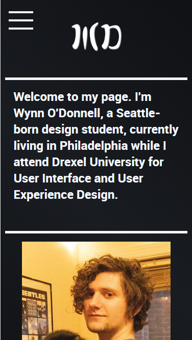
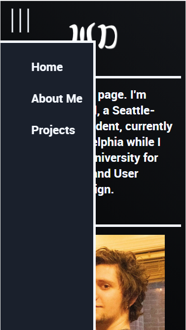
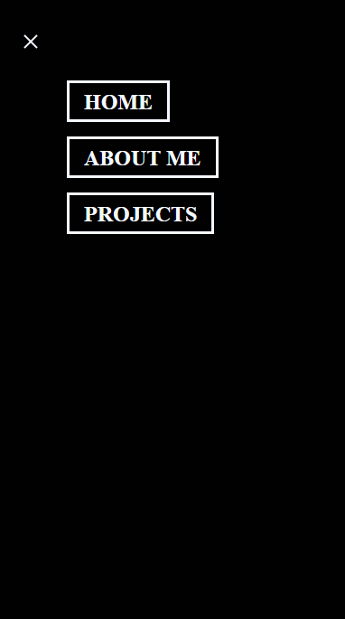
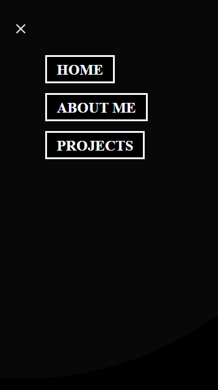
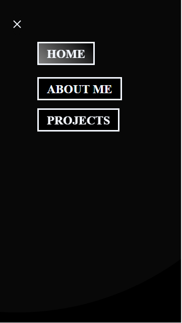

Microinteraction Menu Design Case Study
By Wynn O'Donnell
Overview:
In this project I wanted to make a menu for an updated version of my portfolio website. I planned on using HTML, CSS to complete this project. I want the menu to have a unique opening and closing animation, and have hover states for each button that is present in the menu.
Purpose:
To create an interactive microinteraction for my mobile and desktop menu on my portfolio website, that will be pleasing to look at, and be fully functional.
The Problem:
My current menu button on the mobile version of my portfolio website is functional, but lacks any animations, or any flare. I hope to solve this problem by redesigning the menu from the ground up, and maintaining the functionality while also adding the much needed flare that the original is lacking.
Goals:
This project will be a success if I am able to create a microinteraction for my menu on my portfolio website that is fully functional, looks well designed, has hoverstate animations, has an animation for when it opens and closes, and fits well within my current website.
Original Menu:
The original menu is fine. It works well enough, but it doesn't have anything special about it. I've done an overview of the original menu in the same style that I will do overviews


Trigger:
The trigger for this microinteraction takes place when the user clicks on the menu icon.
Rules:
When the user clicks on the menu icon the menu icon will flip 90degrees, the menu will open, and the menu will stay open until the icon is clicked again.
Feedback:
The user will know the microinteraction is happening when they see the menu open and the icon flip when they click on the icon.
Modes and Loops:
There are two modes in this microinteraction, open mode and closed mode. In open mode the menu will be open and the icon will be different. In the close mode there will be a menu icon visible, but no visible menu.
Style:
For the design of this menu I wanted to stick to something that would fit in my portfolio page, not be too flashy, but also be distict and visually interesting, if not totally in the users face.
For this I decided to stick with a simple black and white approch. The buttons within the menu would have a gradient of different grays, and the button itself would have a white boarder, and white text. The menu icons all remained white. For the background of the menu I decided I wanted something opaque, and I ended up going with a lighter gray, that would animate when the menu button was clicked.
First Iteration:
For the first iteration of this project I decied to get the menu itself working. Make sure that I had something I liked before I started making everything pretty.

Trigger:
The trigger for this microinteraction takes place when the user clicks on the menu icon.
Rules:
When the user clicked on the menu icon the icon will expand, and become three different buttons, which will all be clickable links to navigate my website. In the menu icons place will be an X, that when clicked will reverse the animation and close the menu.
Feedback:
The user will know the microinteraction is happening when they see the menu opening animation, and the icon becomes an X
Modes and Loops:
There are two modes in this microinteraction, open mode and closed mode. In open mode the menu will be open and the icon will be different. In the close mode there will be a menu icon visible, but no visible menu.
A link to the First Iteration
Final:
For the Final version of this project I wanted to add hoverstates for each of the menu icons, and add a background to display behind the menu so that it could be put on any part of the website.


Triggers:
The first trigger for this microinteraction takes place when the user clicks on the menu icon. The second trigger occurs when the user hovers over any of the menu icons within the menu.
Rules:
When the user clicked on the menu icon the icon will expand, and become three different buttons, which will all be clickable links to navigate my website, when you hover over any of these links they will float slightly in the space above where they were, and glide up and down slowly. In the menu icons place will be an X, that when clicked will reverse the animation and close the menu. There will also be an opaque circle in the background that will cover the whole menu and and the area around it.
Feedback:
The user will know the microinteraction is happening when they see the menu opening animation, the icon becomes an X, and there is a menu with a background open. They will know they are triggering the hoverstate when they hover over one of the buttons and it floats slightly, bobbing up and down, and the color of the button changes.
Modes and Loops:
There are three modes in this microinteraction, open mode, closed mode, and hover mode. In open mode the menu will be open and the icon will be different. In the close mode there will be a menu icon visible, but no visible menu. In hover mode the menu will be open and the icon the user is hovering over will be bobbing slowing and have a different background color.
A link to the Final Iteration
Results:
Overall I think this project was a success. I was able to completely redo the microinteraction for my menu on my website, and I am very satisfied with the result. It has just enough flare that it is interesting, but not so much that it detracts from the rest of the web page. It took me some time to create, but the whole thing satisfies my requirements for the project, so I am happy with it.